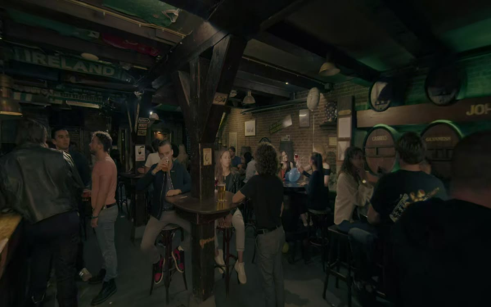
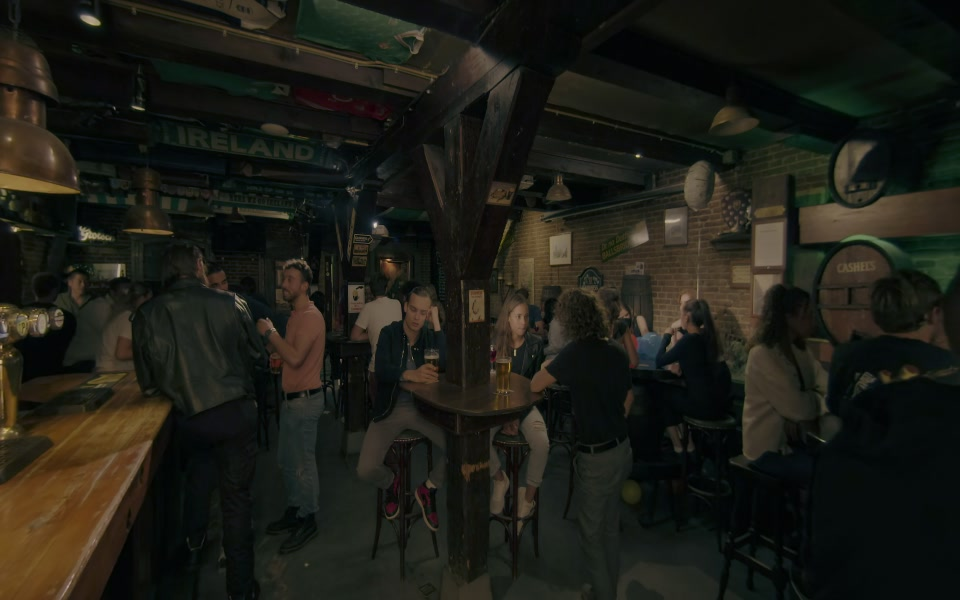

AI-generatedMagic window
In preparation
Screen delivery
Scalable Immersion
Choose a scenario and screen or headset delivery. Captured videos and a screen-based 6 DoF Bystander reconstruction are available; other sessions are in preparation.
Scroll horizontally to compare all sessions.
| Bystander | Aggression | ||||
|---|---|---|---|---|---|
| Production approach | Screen delivery | Headset delivery | Screen delivery | Headset delivery | |
| Capture |
 CapturedMagic window Open screen sessionScreen delivery Captured · Magic window |
CapturedVR180 Open headset sessionHeadset delivery Captured · VR180 |
 CapturedMagic window Open screen sessionScreen delivery Captured · Magic window |
CapturedVR180 Open headset sessionHeadset delivery Captured · VR180 |
|
| AI Generation (video) |
 In preparationMagic window In preparation
Screen delivery Generated · Magic window |
In preparationVR180 In preparation
Headset delivery Generated · VR180 |
AI-generatedMagic window In preparation
Screen delivery Generated · Magic window |
AI-generatedVR180 In preparation
Headset delivery Generated · VR180 |
|
| AI 3D reconstruction (fixed viewpoint) |  In preparation3 DoF In preparation
Screen delivery Reconstructed · Magic window |
Reconstructed3 DoF In preparation
Headset delivery Reconstructed · 180° mono |
|||
| AI 3D reconstruction (walkable) |
6 DoF Open screen sessionScreen delivery Reconstructed · Walkable 3D world |
Reconstructed6 DoF In preparation
Headset delivery Reconstructed · Walkable 3D world |
|||